材料 25個分
※粉量を変えると自動計算されます
カスタードクリーム
シュー生地
作り方
カスタードクリーム
STEP 1
卵黄、薄力粉、グラニュー糖を鍋に入れ混ぜる
卵黄とグラニュー糖をよく混ぜてから薄力粉を加えることで、粉がダマになりにくくなります。粉気がなくなり、全体がなめらかになるまでしっかり混ぜておきます。
卵黄とグラニュー糖をよく混ぜてから薄力粉を加えることで、粉がダマになりにくくなります。粉気がなくなり、全体がなめらかになるまでしっかり混ぜておきます。
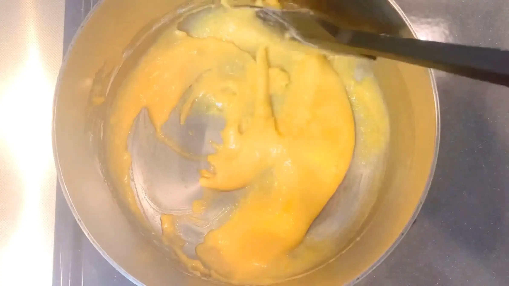
STEP 2
牛乳を加えて中火にかけ、とろみが出るまで混ぜる
火にかけたらヘラを使い、絶えず混ぜます。沸騰してから30秒〜1分程度しっかり加熱して、粉に火を通します。弱火で長時間加熱すると卵に先に火が入りやすく、ダマになりやすいため、少し怖く感じますが中火で手早く加熱するのがおすすめです。
火にかけたらヘラを使い、絶えず混ぜます。沸騰してから30秒〜1分程度しっかり加熱して、粉に火を通します。弱火で長時間加熱すると卵に先に火が入りやすく、ダマになりやすいため、少し怖く感じますが中火で手早く加熱するのがおすすめです。
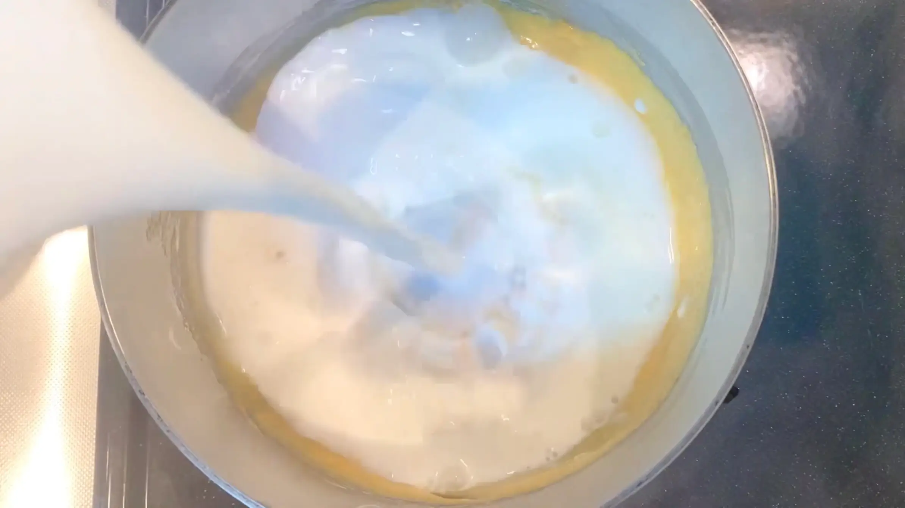
STEP 3
クリームを鍋から取り出し、冷蔵する
クリームを平らな容器に移してならし、表面にラップをぴったり密着させます。卵や牛乳を使ったクリームは傷みやすいため、粗熱が取れたら冷蔵庫に入れ、できるだけ早くしっかり冷やします。
クリームを平らな容器に移してならし、表面にラップをぴったり密着させます。卵や牛乳を使ったクリームは傷みやすいため、粗熱が取れたら冷蔵庫に入れ、できるだけ早くしっかり冷やします。
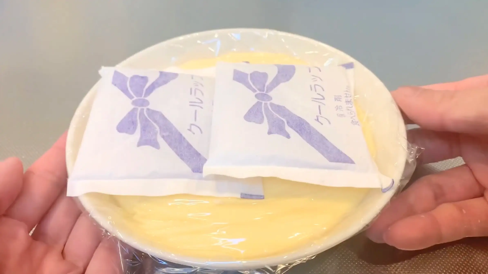
シュー生地
STEP 1
薄力粉と強力粉をふるって混ぜる
粉類をあらかじめふるっておくことで、ダマを防ぎ、鍋に加えたときの混ぜムラも防ぐことができます。
粉類をあらかじめふるっておくことで、ダマを防ぎ、鍋に加えたときの混ぜムラも防ぐことができます。
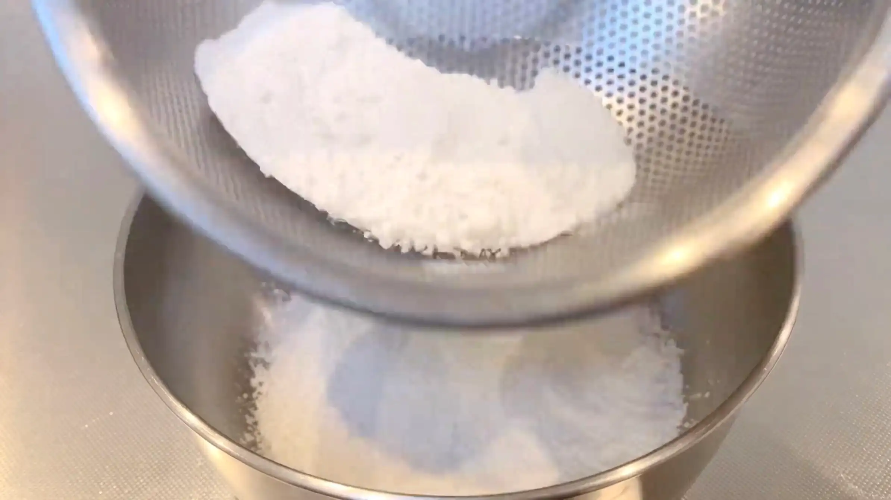
STEP 2
バター、水、牛乳、グラニュー糖を鍋に入れ火にかける
火にかけながら材料をしっかり混ぜ合わせ、バターが溶けるまで加熱します。
火にかけながら材料をしっかり混ぜ合わせ、バターが溶けるまで加熱します。
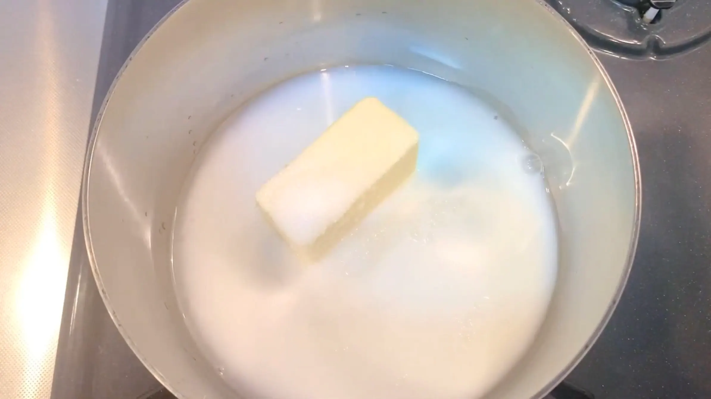
STEP 3
バターが溶けたら粉を加え、弱火で2分混ぜる（[動画 03:19]）
粉を加えたらヘラで混ぜます。ここで生地の水分を適度に飛ばしておくことが、焼いたときに生地を膨らませるポイントですが、一番大切なのは「火にかける時間」です。初めて作る際は生地の状態を見極めることが難しいため、とにかく「弱火で2分」加熱したら火からあげます。
粉を加えたらヘラで混ぜます。ここで生地の水分を適度に飛ばしておくことが、焼いたときに生地を膨らませるポイントですが、一番大切なのは「火にかける時間」です。初めて作る際は生地の状態を見極めることが難しいため、とにかく「弱火で2分」加熱したら火からあげます。
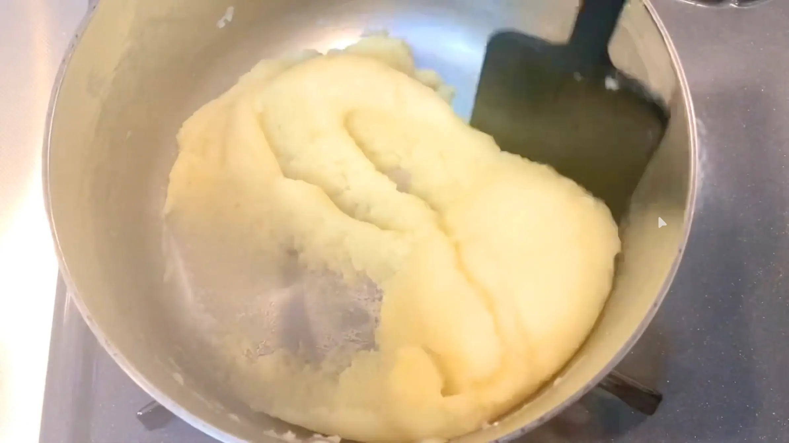
STEP 4
生地をボウルに取り出す
鍋の余熱で生地が加熱され続けるのを防ぐため、加熱後はすぐにボウルへ移します。熱いまま卵を加えると卵が固まりやすいため、次の工程に進む前に少し生地を冷まします。
鍋の余熱で生地が加熱され続けるのを防ぐため、加熱後はすぐにボウルへ移します。熱いまま卵を加えると卵が固まりやすいため、次の工程に進む前に少し生地を冷まします。
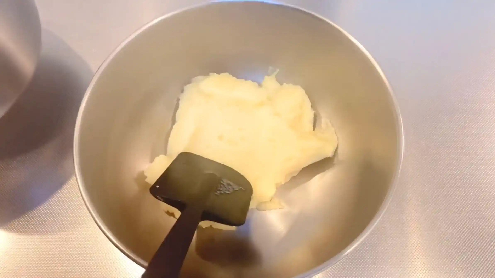
STEP 5
溶き卵を3回に分けて加えながら、生地を混ぜる（[動画 04:26]）
卵を一度に加えると生地になじみにくいため、数回に分けて加え、その都度しっかり混ぜます。
卵を一度に加えると生地になじみにくいため、数回に分けて加え、その都度しっかり混ぜます。
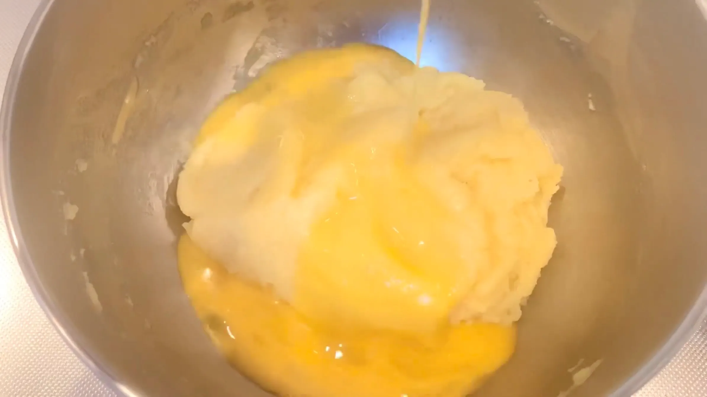
STEP 6
生地を絞り袋に入れ、天板にオーブンシートを敷く（[動画 04:58]）
生地を絞り袋に入れる際は、コップなど深さのある容器に袋を固定すると、生地が入れやすくなります。
生地を絞り袋に入れる際は、コップなど深さのある容器に袋を固定すると、生地が入れやすくなります。
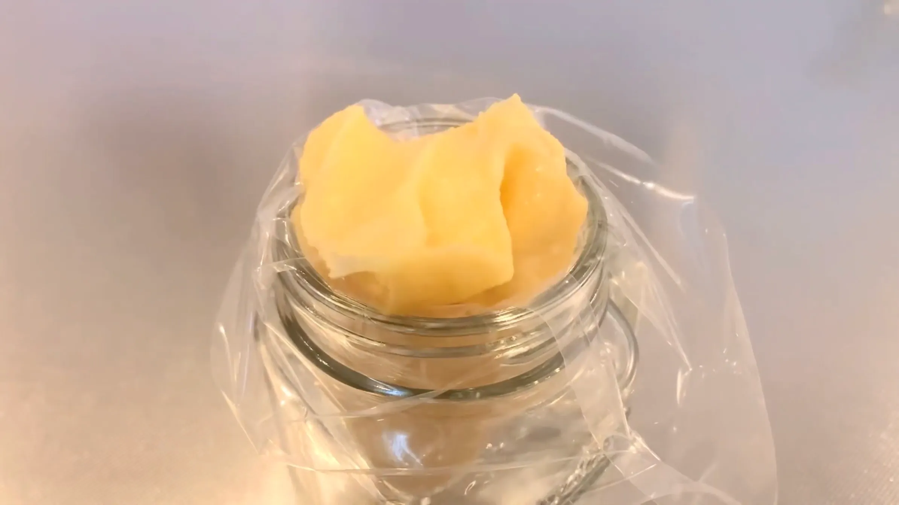
STEP 7
オーブンシートに生地で目印をつけ、オーブンを170℃に予熱しておく
シューを均等な大きさに焼き上げるため、あらかじめ絞る位置に少量の生地を絞り、目印をつけておきます。レシピの分量では、30㎝四方の天板で25個のシュー生地を焼くことができます。個数や絞る位置は、ご家庭の天板に合わせて調整してください。
シューを均等な大きさに焼き上げるため、あらかじめ絞る位置に少量の生地を絞り、目印をつけておきます。レシピの分量では、30㎝四方の天板で25個のシュー生地を焼くことができます。個数や絞る位置は、ご家庭の天板に合わせて調整してください。
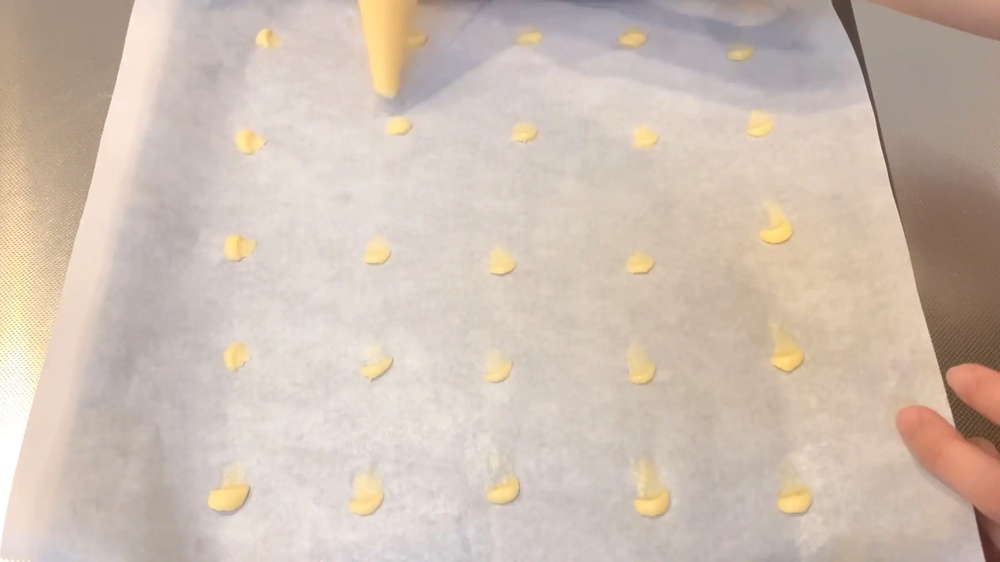
STEP 8
目印の上から、生地を小さな渦巻きに絞る（[動画 05:21]）
絞り袋を天板に対して垂直に持ち、生地を渦巻きに絞ります。絞り終わりは、絞り袋をスッと持ち上げるイメージで離すと、生地が横に広がりにくく、綺麗に絞ることができます。
絞り袋を天板に対して垂直に持ち、生地を渦巻きに絞ります。絞り終わりは、絞り袋をスッと持ち上げるイメージで離すと、生地が横に広がりにくく、綺麗に絞ることができます。
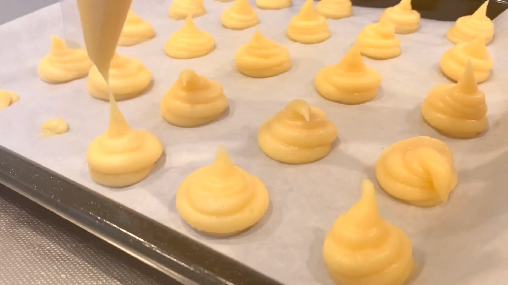
STEP 9
スプーンの背で、生地のてっぺんをならす（[動画 06:04]）
絞った生地の先端が尖っていると、その部分だけ焦げやすくなります。背を濡らしたスプーンで先端をならし、生地の表面をきれいに整えます。
絞った生地の先端が尖っていると、その部分だけ焦げやすくなります。背を濡らしたスプーンで先端をならし、生地の表面をきれいに整えます。
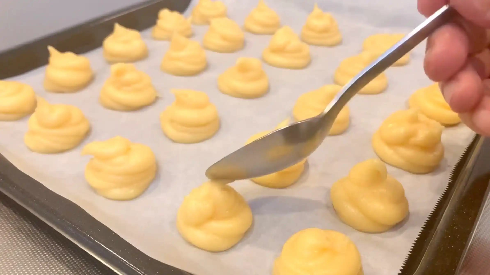
STEP 10
予熱したオーブン170℃で約40分焼く
一般的なレシピでは170℃12分程で焼く場合もありますが、我が家のオーブンでは170℃40分程で上手く焼き上がりました。小さなシューでも中までしっかり火を通し、焼き上がった後もしぼみにくくするため、表面に十分な焼き色がつくまで焼きます。焼き時間や温度は目安とし、ご家庭のオーブンによって調整してください。
一般的なレシピでは170℃12分程で焼く場合もありますが、我が家のオーブンでは170℃40分程で上手く焼き上がりました。小さなシューでも中までしっかり火を通し、焼き上がった後もしぼみにくくするため、表面に十分な焼き色がつくまで焼きます。焼き時間や温度は目安とし、ご家庭のオーブンによって調整してください。
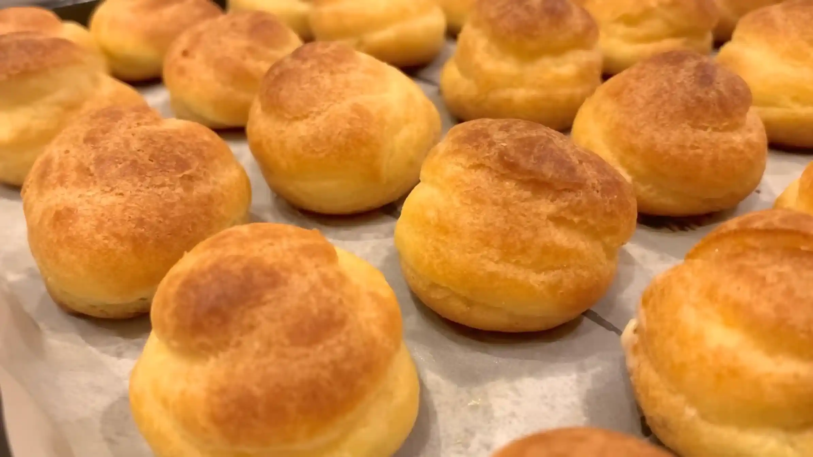
STEP 11
焼き上がった生地に竹串で穴をあける
カスタードクリームを詰めるための穴を、シューの底に竹串であけます。穴が大きすぎるとクリームが漏れやすくなるため、竹串を軽く差し込む程度にします。
カスタードクリームを詰めるための穴を、シューの底に竹串であけます。穴が大きすぎるとクリームが漏れやすくなるため、竹串を軽く差し込む程度にします。
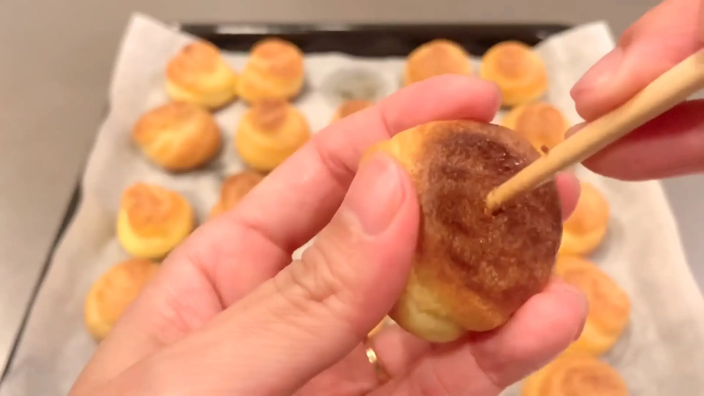
STEP 12
カスタードクリームを詰める
シューが完全に冷めてから、底や側面にあけた穴からカスタードクリームを詰めます。冷やしたカスタードクリームは固まっているため、少し練ってなめらかにしてから使います。
シューが完全に冷めてから、底や側面にあけた穴からカスタードクリームを詰めます。冷やしたカスタードクリームは固まっているため、少し練ってなめらかにしてから使います。
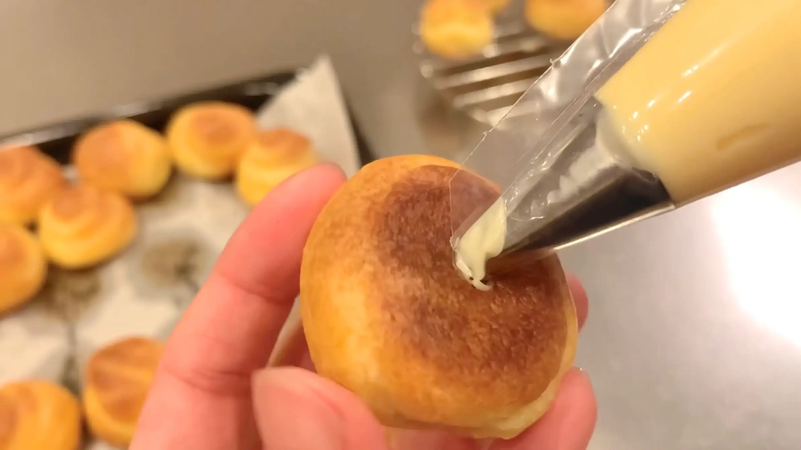
動画でチェック
おいしく作るためのワンポイントコラム
『ま、失敗してもいいか！』くらいの気持ちで、お菓子作りのなかでも難しいと言われるシュークリーム、『プチシュークリーム』に初めて挑戦しました。
「生地が膨らまない」というのはよく聞きますよね。実際に作ってみてわかったポイントを3つご紹介します。
① 意外とシンプルな生地作り
難しいイメージが先行していたシュー生地ですが、工程自体は意外とシンプルで簡単でした。そして大事なポイントは火にかける時間をきっちり守ること。バターなどを溶かし、鍋に粉を加えたあと弱火で2分間しっかり混ぜて生地に火を通します。これだけでOK！この工程で、水分が綺麗に抱き込まれて膨らみやすい生地になるそうです。が、素人ゆえに難しいことは正直一切わかりませんでした。ただ、大事なことなのでもう一度言います、とにかく火にかける時間をきっちり守る、これが一番のポイントです！こうすることで、不思議なことにしっかり膨らむ美味しい生地ができあがりますね。
② 生地の絞り方
生地を焼く際は、天板のオーブンシートに生地をちょんちょんとつけて、あらかじめ25個分の目印をつけておくのがポイント。これだけで、均一な大きさで迷わず綺麗に絞り出せるようになります。そして絞ったあと、スプーンの背（少し濡らすとやりやすいです）で生地のてっぺんのとんがりをツンツンとならすのも重要。このひと手間で、焼き上がったときに頭が焦げつくのを防ぎ、コロンと丸くて可愛いフォルムに仕上がります。
③ 焼き時間
焼き時間の「170℃で40分」は、小さなプチシューにしては少し長く感じますよね。一般的なレシピでは170℃12分程で焼く場合もありますが、これでは全く焼けず、焼き色すらついていない状態でした。結局、我が家のオーブンでは40分程で上手く焼き上げることができました。焼き色や食感などとても上手にできたので、ご参考になればと思います。ご家庭のオーブンによって温度や時間はご調整ください。
今回は初めてシュークリームを作ってみましたが、生地を火にかける作業が一番緊張しました。火を入れたらもうあと戻りできなくなってしまうんじゃないか、と不安になりましたが、「弱火で2分」。これさえ守れば、とても美味しいシュークリームが出来上がりましたね！失敗するのが怖くて挑戦を躊躇されている方がいましたら、一度このレシピで作ってみてください！
「生地が膨らまない」というのはよく聞きますよね。実際に作ってみてわかったポイントを3つご紹介します。
① 意外とシンプルな生地作り
難しいイメージが先行していたシュー生地ですが、工程自体は意外とシンプルで簡単でした。そして大事なポイントは火にかける時間をきっちり守ること。バターなどを溶かし、鍋に粉を加えたあと弱火で2分間しっかり混ぜて生地に火を通します。これだけでOK！この工程で、水分が綺麗に抱き込まれて膨らみやすい生地になるそうです。が、素人ゆえに難しいことは正直一切わかりませんでした。ただ、大事なことなのでもう一度言います、とにかく火にかける時間をきっちり守る、これが一番のポイントです！こうすることで、不思議なことにしっかり膨らむ美味しい生地ができあがりますね。
② 生地の絞り方
生地を焼く際は、天板のオーブンシートに生地をちょんちょんとつけて、あらかじめ25個分の目印をつけておくのがポイント。これだけで、均一な大きさで迷わず綺麗に絞り出せるようになります。そして絞ったあと、スプーンの背（少し濡らすとやりやすいです）で生地のてっぺんのとんがりをツンツンとならすのも重要。このひと手間で、焼き上がったときに頭が焦げつくのを防ぎ、コロンと丸くて可愛いフォルムに仕上がります。
③ 焼き時間
焼き時間の「170℃で40分」は、小さなプチシューにしては少し長く感じますよね。一般的なレシピでは170℃12分程で焼く場合もありますが、これでは全く焼けず、焼き色すらついていない状態でした。結局、我が家のオーブンでは40分程で上手く焼き上げることができました。焼き色や食感などとても上手にできたので、ご参考になればと思います。ご家庭のオーブンによって温度や時間はご調整ください。
今回は初めてシュークリームを作ってみましたが、生地を火にかける作業が一番緊張しました。火を入れたらもうあと戻りできなくなってしまうんじゃないか、と不安になりましたが、「弱火で2分」。これさえ守れば、とても美味しいシュークリームが出来上がりましたね！失敗するのが怖くて挑戦を躊躇されている方がいましたら、一度このレシピで作ってみてください！


今回は、お菓子作りのなかでも難しいと言われている『シュークリーム』に初めて挑戦します。「ま、失敗してもいいか！」くらいの気持ちで気楽に作ってみました。実際にやってみてわかった3つのポイントをご紹介します。